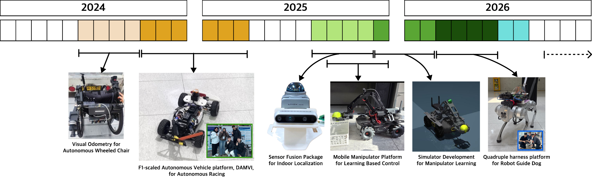

2027
I will begin my master's journey at POSTECH DI Lab in Spring 2027.
Advised by Prof. Hwanjo Yu.
Thank you for visiting my page! I am an undergraduate student in Smart Mobility Engineering at Inha University.
I am interested in robot foundation models, especially enhancing Vision-Language-Action (VLA) models through world models. I also explore world action models. My ultimate goal is to build safe, robust robot policies that make everyday tasks easier for people.

I will begin my master's journey at POSTECH DI Lab in Spring 2027.
Advised by Prof. Hwanjo Yu.